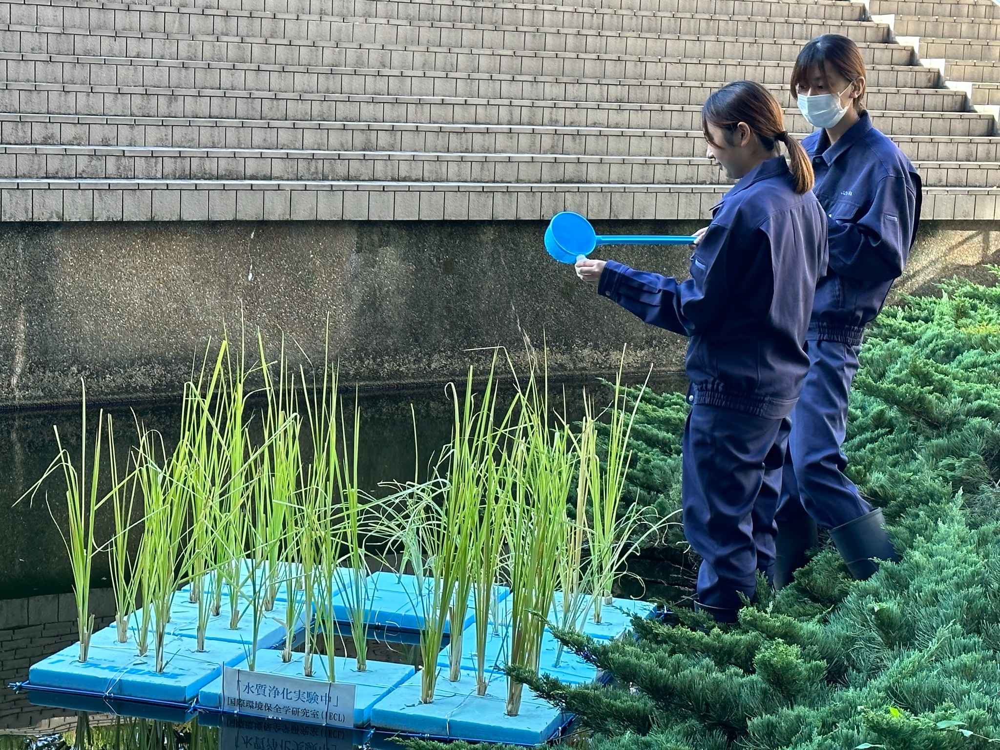
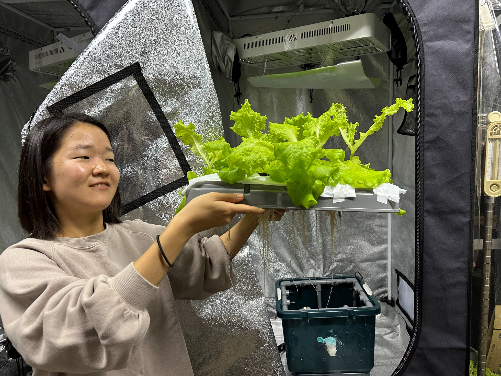

Experiments and field surveys
Students design field and pot studies, collect soil and water samples, compare treatments and present their evidence. The current projects below show the questions being studied.
IECL / LAB
International Environmental Conservation Laboratory Department of Environmental Science College of Bioresource Sciences Nihon University
Undergraduate and graduate students investigate questions in soil and water conservation and environmental rehabilitation through experiments, field surveys and analysis. Seminar discussions and research presentations support the exchange of findings, while field training provides direct experience of local conditions and management.
01 / IN PHOTOGRAPHS




02 / ACTIVITIES
Students design field and pot studies, collect soil and water samples, compare treatments and present their evidence. The current projects below show the questions being studied.
Students visit field sites and learn from the people who manage agricultural land and rural infrastructure.
Students present their work in thesis seminars and at academic meetings; faculty also share findings with other researchers.
03 / FIELD TRAINING & LAB LIFE
Students learned about agricultural and rural infrastructure and land management through briefings and site visits.


A visit to the Ryoso irrigation facilities introduced students to agricultural water supply.


Social events and farewells for graduating students are part of life in the laboratory.


04 / PRACTICE
Students learn to define a question before collecting data. Depending on the project, they work in the field, in pots or with soil and water samples, then examine the data and present a conclusion with its limits.
FIELD
Record soil and crop conditions, sample water or soil, and measure how conditions change across a field or over time.
EXPERIMENT
Set up a control and planned treatments; measure soil moisture, pH or EC, plant growth and other variables matched to the question.
ANALYSIS
Check data quality, interpret soil and water measurements alongside maps or imagery where appropriate, and explain uncertainty in a thesis, poster or oral presentation.
05 / 2026
Current questions being investigated in the laboratory.
Compare processed rice materials as soil amendments, monitoring soil physical conditions and crop growth.
Measures: soil moisture, soil temperature, soil pH/EC, plant growth.Compare changes in soil moisture over time in field plots planted with different crops.
Measures: soil moisture, soil water tension, soil temperature.Evaluate amendment treatments in saline soil and record both plant and leachate response.
Measures: EC, growth, biomass, leachate.Examine how a recycled material changes water retention across contrasting soils.
Measures: moisture, pot mass, water status, plant growth.06 / RESEARCH RECORD
Explore research themes and field sites from the former university laboratory profile.